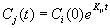
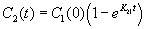
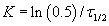

Kinetic reaction elements are made up of source/product species pairs. You can define any number of pairs per element you desire. Only those species that you have selected to be contaminants will be accounted for when you perform simulations. These are the properties that describe a kinetic reaction.
Name: Enter a unique name you want to use to identify the reaction matrix. You will use this name to associate this element with zones within the project.
Description: Use this to provide a more detailed description of the kinetic reaction.
Reactant→Product Pairs: This is a list of the reactant/product pairs and their associated reaction coefficients that are currently defined for the current kinetic reaction element.
Edit Reactant→Product Pair: Use this section to edit the highlighted Reactant®Product pair or create new ones. Use the Add, Replace and Delete buttons accordingly.
Reactant Species: This is a list of all the species in either the current project or library file depending on how this dialog box was accessed. Select a species to be the reactant in the R®P Pair.
Product Species: This is a list of all the species in either the current project or library file depending on how this dialog box was accessed. Select a species to be the product in the R®P Pair.
Reaction Coefficient: Use this edit field to set the reaction coefficient for the currently highlighted R®P Pair. The units of the coefficient are s-1.
The following are examples of kinetic reactions as implemented within CONTAMW.
Kinetic Reaction Example 1
To simulate the first-order decay of a species, you would set the coefficient of the Reactant→Product Pair to the negative of the reaction rate in units of 1/s.
This figure shows kinetic reaction coefficients for two species reactions that will yield exponential decays of each species according to the following equation:

Where,
Cj(t) = concentration of product contaminant j at time t
Ci(0) = initial concentration of reactant contaminant i at time 0
Kji = reaction rate coefficient between product j and reactant i (time constant)
In the above example, the reaction rate coefficients are as follows:
K11 = -0.0001388/s
K22 = -0.00003472/s
If the reaction is the only means of species removal, i.e., there is no dilution due to airflow, then species C1 would decay at a rate of
0.0001388 * 3600 = 0.5/h,
and C2 would decay at a rate of
0.00003472 * 3600 = 0.125/h.
Kinetic Reaction Example 2
This example illustrates the first-order decay of species C1 (reactant and product) and the first order build-up of another species C2 (product) based on C1(reactant).

This figure above shows the parameters for the "kr1" kinetic reaction element. This element provides for two reactions that will yield an exponential decay of contaminant C1 according to the equation
 ,
,
and the build-up of contaminant C2 according to

In the above example, the reaction rate coefficients are as follows:
K11 = -0.0001389/s
K21 = 0.0001389/s
Note that both the decay and build-up are dependent on the species of C1.
Kinetic Reaction Example 3
You can also use the kinetic reaction to simulate a consecutive first-order reaction series. (The radioactive decay chain of Radon gas is an example of such a reaction.)
A two-step consecutive reaction series involving a single reactant at each step is indicated as
C1 ® C2
C2 ® products
You would model this reaction chain by inputting coefficients based on the half-life of the radioactive reactants. Convert half-life t1/2 to a first-order reaction coefficient, K21, using the following equation:

In CONTAM, you would require two species C1 and C2 (if interested in contaminant C2) and three reactant/product pairs have the following reaction coefficients characteristics:
K11 would have negative non-zero values (decay of C1)
K21 would have a non-zero positive value (build-up of C2 from C1)
K22 would have negative non-zero values (decay of C2)